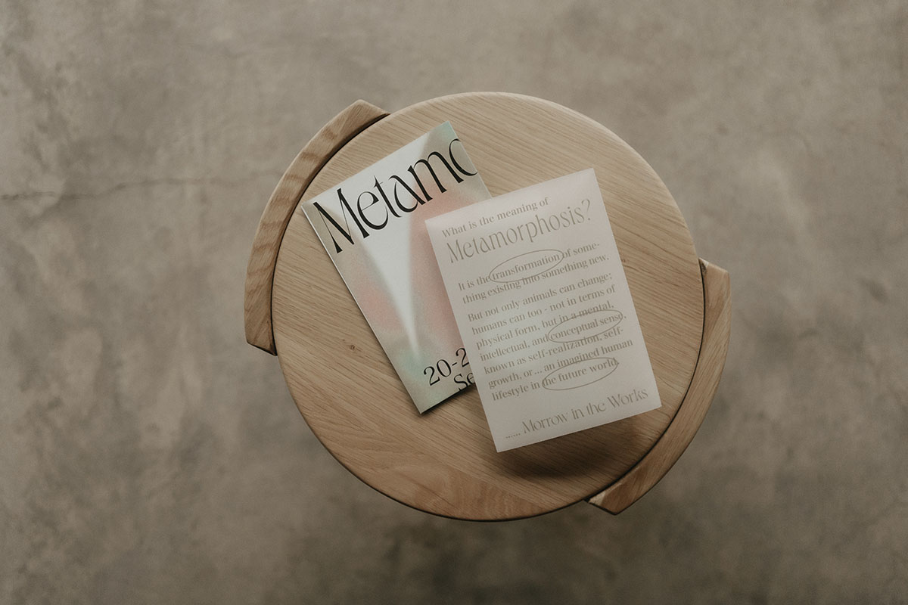
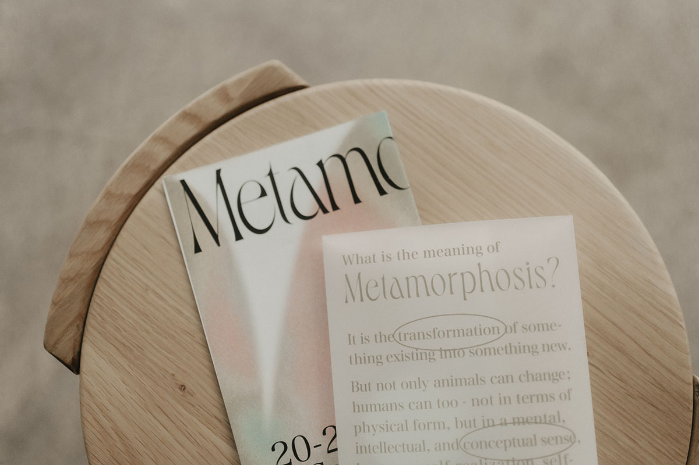
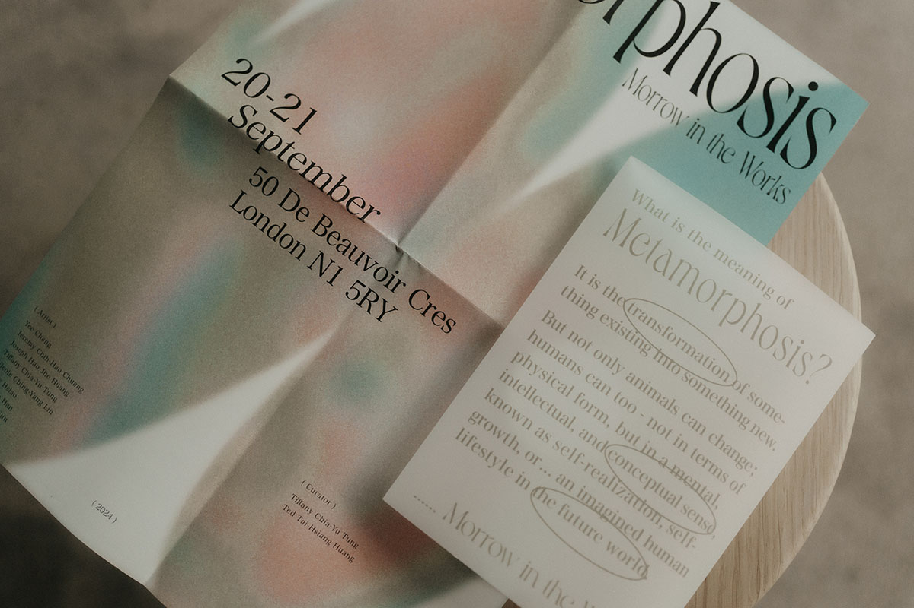
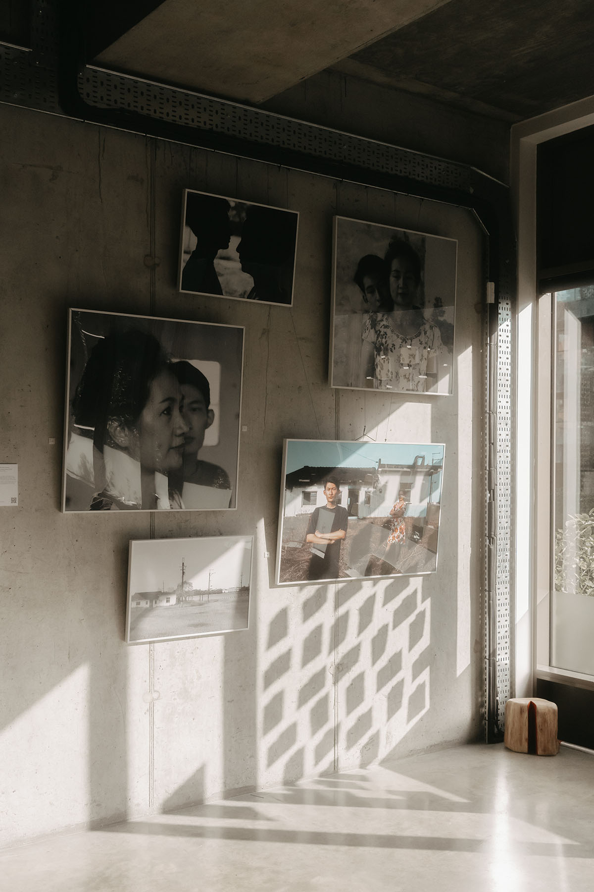
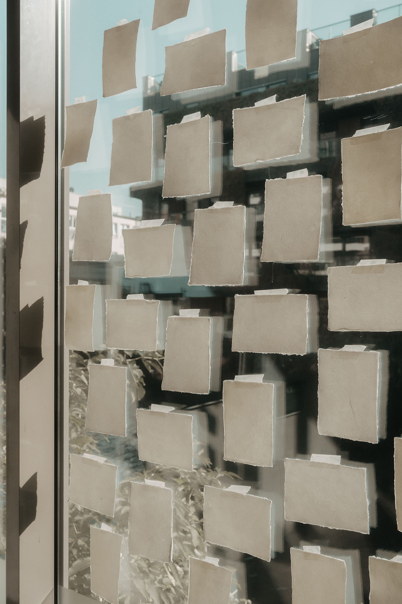
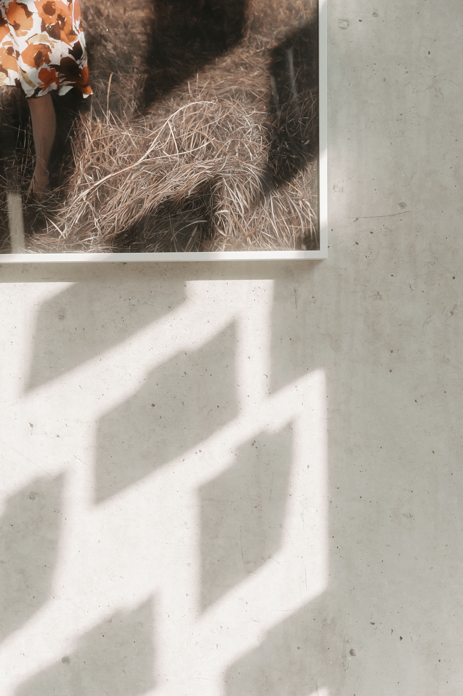
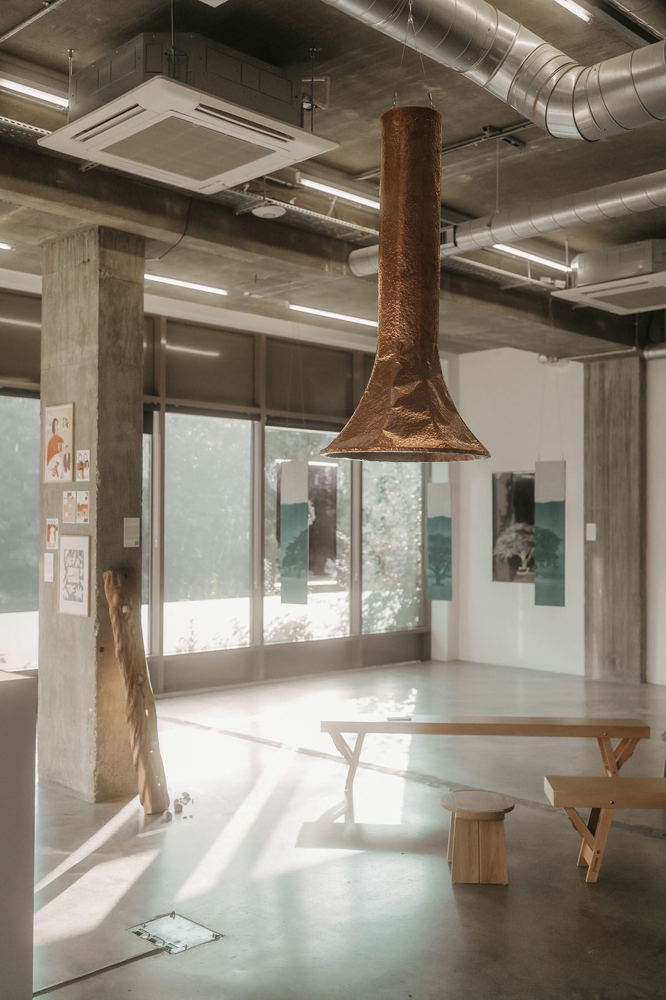
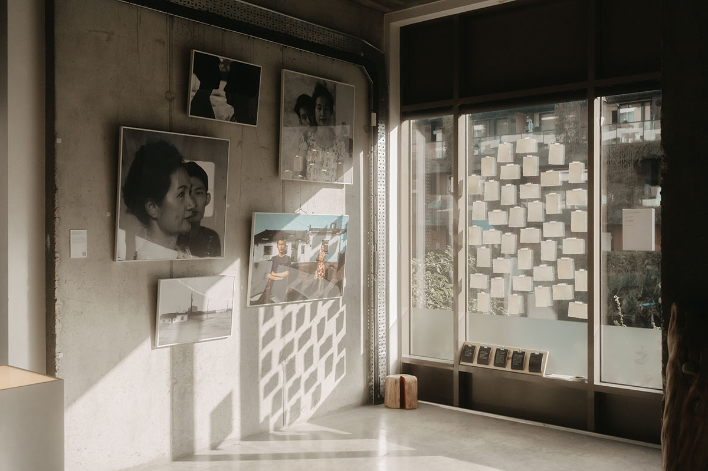
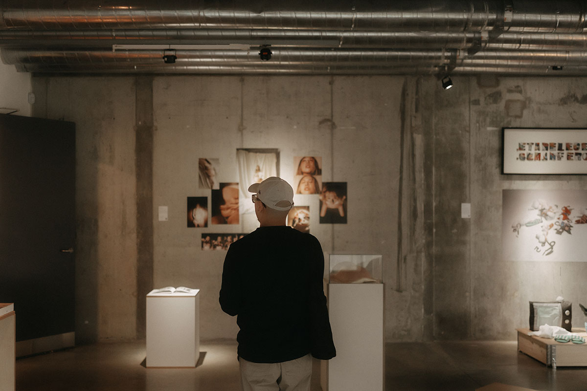

INFO
This visual identity was designed for the exhibition "Metamorphosis: Morrow in the Works," which explores the concept of human evolution through biological and imaginative lenses. The exhibition positions art as a metaphor for social, cultural, and personal transformation.
Inspired by the core theme of "heterogeneity," the visual language utilizes fluid, organic color transitions and a grainy texture to represent the ambiguous state of evolution. The interplay between vibrant gradients and sharp typography creates an "aesthetic heterotopia," offering a space where contemporary societal challenges meet futuristic imagination. The use of elegant serif typography provides a structured contrast to the amorphous backgrounds, symbolizing the search for personal identity within a constantly changing world.
CREDITS
Curator: Tiffany Chia-Yu Tung & Ted Tai-Hsiang Hunag
Artist: Yee Chang / Sally Hsiao / Nicole Lin / Tiffany Chia-Yu Tung / Nayeon Han / Jeremy Chih-Hao Chuang / Joseph Hao-Jhe Huang / Minghao Sun
Photohraphy: Lisa Laudieri








